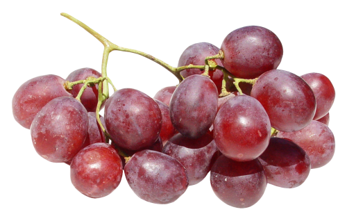

Food

While ducks like to eat fruit, it's important to cut them into tiny pieces for them to digest.

Ducks love greens! Leafy veggies like kale, romaine lettuce, or cabbage are good for them.
Contrary to popular belief, it's actually BAD to feed ducks bread. It messes up their digestive systems.